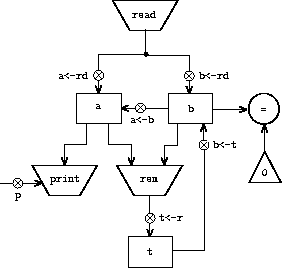
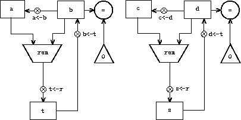

5.1 Designing Register Machines
To design a register machine, we must design its data paths (registers and operations) and the controller that sequences these operations. To illustrate the design of a simple register machine, let us examine Euclid's Algorithm, which is used to compute the greatest common divisor (GCD) of two integers. As we saw in section 1.2.5, Euclid's Algorithm can be carried out by an iterative process, as specified by the following procedure:
(define (gcd a b)
(if (= b 0)
a
(gcd b (remainder a b))))
A machine to carry out this algorithm must keep track of two numbers,
a and b, so let us assume that these numbers are stored in two
registers with those names. The basic operations required are testing
whether the contents of register b is zero and computing the remainder
of the contents of register a divided by the contents of register b.
The remainder operation is a complex process, but assume for the moment
that we have a primitive device that computes remainders. On each cycle
of the GCD algorithm, the contents of register a must be replaced by
the contents of register b, and the contents of b must be replaced
by the remainder of the old contents of a divided by the old contents
of b. It would be convenient if these replacements could be done
simultaneously, but in our model of register machines we will assume
that only one register can be assigned a new value at each step. To
accomplish the replacements, our machine will use a third
''temporary'' register, which we call t. (First the remainder will
be placed in t, then the contents of b will be placed in a, and
finally the remainder stored in t will be placed in b.)
We can illustrate the registers and
operations required for this machine by using the data-path diagram
shown in figure
5.1. In this diagram, the
registers (a, b, and t) are represented by rectangles. Each way to
assign a value to a register is indicated by an arrow with an X behind
the head, pointing from the source of data to the register. We can think
of the X as a button that, when pushed, allows the value at the source
to ''flow'' into the designated register. The label next to each
button is the name we will use to refer to the button. The names are
arbitrary, and can be chosen to have mnemonic value (for example, a<-b
denotes pushing the button that assigns the contents of register b to
register a). The source of data for a register can be another register
(as in the a<-b assignment), an operation result (as in the t<-r
assignment), or a constant (a built-in value that cannot be changed,
represented in a data-path diagram by a triangle containing the
constant).
An operation that computes a value from constants and the contents of
registers is represented in a data-path diagram by a trapezoid
containing a name for the operation. For example, the box marked rem
in figure
5.1 represents an operation that
computes the remainder of the contents of the registers a and b to
which it is attached. Arrows (without buttons) point from the input
registers and constants to the box, and arrows connect the operation's
output value to registers. A test is represented by a circle containing
a name for the test. For example, our GCD machine has an operation that
tests whether the contents of register b is zero. A test also has
arrows from its input registers and
constants, but it has no output arrows; its value is used by the
controller rather than by the data paths. Overall, the data-path diagram
shows the registers and operations that are required for the machine and
how they must be connected. If we view the arrows as wires and the X
buttons as switches, the data-path diagram is very like the wiring
diagram for a machine that could be constructed from electrical
components.

Figure 5.1: Data paths for a GCD machine.
In order for the data paths to actually
compute GCDs, the buttons must be pushed in the correct sequence. We
will describe this sequence in terms of a controller diagram, as
illustrated in figure
5.2. The elements of
the controller diagram indicate how the data-path components should be
operated. The rectangular boxes in the controller diagram identify
data-path buttons to be pushed, and the arrows describe the sequencing
from one step to the next. The diamond in the diagram represents a
decision. One of the two sequencing arrows will be followed, depending
on the value of the data-path test identified in the diamond. We can
interpret the controller in terms of a physical analogy: Think of the
diagram as a maze in which a marble is rolling. When the marble rolls
into a box, it pushes the data-path button that is named by the box.
When the marble rolls into a decision node (such as the test for b =
0), it leaves the node on the path determined by the result of the
indicated test. Taken together, the data paths and the controller
completely describe a machine for computing GCDs. We start the
controller (the rolling marble) at the place marked start, after
placing numbers in registers a and b. When the controller reaches
done, we will find the value of the GCD in register a.

Figure 5.2: Controller for a GCD machine.
Exercise 5.1. Design a register machine to compute factorials using the iterative algorithm specified by the following procedure. Draw data-path and controller diagrams for this machine.
(define (factorial n)
(define (iter product counter)
(if (> counter n)
product
(iter (* counter product)
(+ counter 1))))
(iter 1 1))
[5.1.1
A Language for Describing Register Machines](book-Z-H-4.html#%toc%_sec_5.1.1)
Data-path and controller diagrams are adequate for representing simple machines such as GCD, but they are unwieldy for describing large machines such as a Lisp interpreter. To make it possible to deal with complex machines, we will create a language that presents, in textual form, all the information given by the data-path and controller diagrams. We will start with a notation that directly mirrors the diagrams.
We define the data paths of a machine by describing the registers and the operations. To describe a register, we give it a name and specify the buttons that control assignment to it. We give each of these buttons a name and specify the source of the data that enters the register under the button's control. (The source is a register, a constant, or an operation.) To describe an operation, we give it a name and specify its inputs (registers or constants).
We define the controller of a machine as a sequence of instructions together with labels that identify entry points in the sequence. An instruction is one of the following:
-
The name of a data-path button to push to assign a value to a register. (This corresponds to a box in the controller diagram.)
-
A
testinstruction, that performs a specified test. -
A conditional branch (
branchinstruction) to a location indicated by a controller label, based on the result of the previous test. (The test and branch together correspond to a diamond in the controller diagram.) If the test is false, the controller should continue with the next instruction in the sequence. Otherwise, the controller should continue with the instruction after the label. -
An unconditional branch (
gotoinstruction) naming a controller label at which to continue execution.
The machine starts at the beginning of the controller instruction sequence and stops when execution reaches the end of the sequence. Except when a branch changes the flow of control, instructions are executed in the order in which they are listed.
(data-paths
(registers
((name a)
(buttons ((name a<-b) (source (register b)))))
((name b)
(buttons ((name b<-t) (source (register t)))))
((name t)
(buttons ((name t<-r) (source (operation rem))))))
(operations
((name rem)
(inputs (register a) (register b)))
((name =)
(inputs (register b) (constant 0)))))
(controller
test-b `*`; label`*`
(test =) `*`; test`*`
(branch (label gcd-done)) `*`; conditional branch`*`
(t<-r) `*`; button push`*`
(a<-b) `*`; button push`*`
(b<-t) `*`; button push`*`
(goto (label test-b)) `*`; unconditional branch`*`
gcd-done) `*`; label`*`
Figure 5.3: A specification of the GCD machine.
Figure 5.3 shows the GCD machine described in this way. This example only hints at the generality of these descriptions, since the GCD machine is a very simple case: Each register has only one button, and each button and test is used only once in the controller.
Unfortunately, it is difficult to read such a description. In order to understand the controller instructions we must constantly refer back to the definitions of the button names and the operation names, and to understand what the buttons do we may have to refer to the definitions of the operation names. We will thus transform our notation to combine the information from the data-path and controller descriptions so that we see it all together.
To obtain this form of description, we will replace the arbitrary button
and operation names by the definitions of their behavior. That is,
instead of saying (in the controller) ''Push button t<-r'' and
separately saying (in the data paths) ''Button t<-r assigns the
value of the rem operation to register t'' and ''The rem
operation's inputs are the contents of registers
a
and b,'' we will say (in the controller) ''Push the button that
assigns to register t the value of the rem operation on the contents
of registers a and b.'' Similarly, instead of saying (in the
controller) ''Perform the = test'' and separately saying (in the
data paths) ''The = test operates on the contents of register b
and the constant 0,'' we will say ''Perform the = test on the
contents of register b and the constant
0.'' We will omit the data-path description, leaving only the
controller sequence. Thus, the GCD machine is described as follows:
(controller
test-b
(test (op =) (reg b) (const 0))
(branch (label gcd-done))
(assign t (op rem) (reg a) (reg b))
(assign a (reg b))
(assign b (reg t))
(goto (label test-b))
gcd-done)
This form of description is easier to read than the kind illustrated in figure 5.3, but it also has disadvantages:
- It is more verbose for large machines, because complete descriptions of the data-path elements are repeated whenever the elements are mentioned in the controller instruction sequence. (This is not a problem in the GCD example, because each operation and button is used only once.) Moreover, repeating the data-path descriptions obscures the actual data-path structure of the machine; it is not obvious for a large machine how many registers, operations, and buttons there are and how they are interconnected.
- Because the controller instructions in a machine definition look like Lisp expressions, it is easy to forget that they are not arbitrary Lisp expressions. They can notate only legal machine operations. For example, operations can operate directly only on constants and the contents of registers, not on the results of other operations.
In spite of these disadvantages, we will use this register-machine language throughout this chapter, because we will be more concerned with understanding controllers than with understanding the elements and connections in data paths. We should keep in mind, however, that data-path design is crucial in designing real machines.
Exercise 5.2. Use the register-machine language to describe the iterative factorial machine of exercise 5.1.
Actions
Let us modify the GCD machine so that we
can type in the numbers whose GCD we want and get the answer printed at
our terminal. We will not discuss how to make a machine that can read
and print, but will assume (as we do when we use read and display in
Scheme) that they are available as primitive
operations.^[1]{.small}^
Read is like the operations we have been using in that
it produces a value that can be stored in a register. But read does
not take inputs from any registers; its value depends on something that
happens outside the parts of the machine we are designing. We will allow
our machine's operations to have such behavior, and thus will draw and
notate the use of read just as we do any other operation that computes
a value.
Print, on the other hand, differs from the operations
we have been using in a fundamental way: It does not produce an output
value to be stored in a register. Though it has an effect, this effect
is not on a part of the machine we are designing. We will refer to this
kind of operation as an action. We will represent an action in a
data-path diagram just as we represent an operation that computes a
value -- as a trapezoid that contains the name of the action. Arrows
point to the action box from any inputs (registers or constants). We
also associate a button with the action. Pushing the button makes the
action happen. To make a controller push an action
button we use a new kind of instruction
called perform. Thus, the action of printing the contents of register
a is represented in a controller sequence by the instruction:
(perform (op print) (reg a))
Figure 5.4 shows the data paths and controller for the new GCD machine. Instead of having the machine stop after printing the answer, we have made it start over, so that it repeatedly reads a pair of numbers, computes their GCD, and prints the result. This structure is like the driver loops we used in the interpreters of chapter 4.

(controller
gcd-loop
(assign a (op read))
(assign b (op read))
test-b
(test (op =) (reg b) (const 0))
(branch (label gcd-done))
(assign t (op rem) (reg a) (reg b))
(assign a (reg b))
(assign b (reg t))
(goto (label test-b))
gcd-done
(perform (op print) (reg a))
(goto (label gcd-loop)))
Figure 5.4: A GCD machine that reads inputs and prints results.
[5.1.2
Abstraction in Machine Design](book-Z-H-4.html#%toc%_sec_5.1.2)
We will often define a machine to include ''primitive'' operations that are actually very complex. For example, in sections 5.4 and 5.5 we will treat Scheme's environment manipulations as primitive. Such abstraction is valuable because it allows us to ignore the details of parts of a machine so that we can concentrate on other aspects of the design. The fact that we have swept a lot of complexity under the rug, however, does not mean that a machine design is unrealistic. We can always replace the complex ''primitives'' by simpler primitive operations.
Consider the GCD machine. The machine has an instruction that computes
the remainder of the contents of registers a and b and assigns the
result to register t. If we want to construct the GCD machine without
using a primitive remainder operation, we must specify how to compute
remainders in terms of simpler operations, such as subtraction. Indeed,
we can write a Scheme procedure that finds remainders in this way:
(define (remainder n d)
(if (< n d)
n
(remainder (- n d) d)))
We can thus replace the remainder operation in the GCD machine's data paths with a subtraction operation and a comparison test. Figure 5.5 shows the data paths and controller for the elaborated machine. The instruction

Figure 5.5: Data paths and controller for the elaborated GCD machine.
(assign t (op rem) (reg a) (reg b))
in the GCD controller definition is replaced by a sequence of instructions that contains a loop, as shown in figure 5.6.
(controller
test-b
(test (op =) (reg b) (const 0))
(branch (label gcd-done))
(assign t (reg a))
rem-loop
(test (op <) (reg t) (reg b))
(branch (label rem-done))
(assign t (op -) (reg t) (reg b))
(goto (label rem-loop))
rem-done
(assign a (reg b))
(assign b (reg t))
(goto (label test-b))
gcd-done)
Figure 5.6: Controller instruction sequence for the GCD machine in figure 5.5.
Exercise 5.3. Design a machine to compute square roots using Newton's method, as described in section 1.1.7:
(define (sqrt x)
(define (good-enough? guess)
(< (abs (- (square guess) x)) 0.001))
(define (improve guess)
(average guess (/ x guess)))
(define (sqrt-iter guess)
(if (good-enough? guess)
guess
(sqrt-iter (improve guess))))
(sqrt-iter 1.0))
Begin by assuming that good-enough? and improve operations are
available as primitives. Then show how to expand these in terms of
arithmetic operations. Describe each version of the sqrt machine
design by drawing a data-path diagram and writing a controller
definition in the register-machine language.
[5.1.3
Subroutines](book-Z-H-4.html#%toc%_sec_5.1.3)
When designing a machine to perform a
computation, we would often prefer to arrange for components to be
shared by different parts of the computation rather than duplicate the
components. Consider a machine that includes two GCD computations --
one that finds the GCD of the contents of registers a and b and one
that finds the GCD of the contents of registers c and d. We might
start by assuming we have a primitive gcd operation, then expand the
two instances of gcd in terms of more primitive operations.
Figure
5.7 shows just the GCD portions of
the resulting machine's data paths, without showing how they connect to
the rest of the machine. The figure also shows the corresponding
portions of the machine's controller sequence.

gcd-1
(test (op =) (reg b) (const 0))
(branch (label after-gcd-1))
(assign t (op rem) (reg a) (reg b))
(assign a (reg b))
(assign b (reg t))
(goto (label gcd-1))
after-gcd-1

gcd-2
(test (op =) (reg d) (const 0))
(branch (label after-gcd-2))
(assign s (op rem) (reg c) (reg d))
(assign c (reg d))
(assign d (reg s))
(goto (label gcd-2))
after-gcd-2
Figure 5.7: Portions of the data paths and controller sequence for a machine with two GCD computations.
This machine has two remainder operation boxes and two boxes for testing
equality. If the duplicated components are complicated, as is the
remainder box, this will not be an economical way to build the machine.
We can avoid duplicating the data-path components by using the same
components for both GCD computations, provided that doing so will not
affect the rest of the larger machine's computation. If the values in
registers a and b are not needed by the time the controller gets to
gcd-2 (or if these values can be moved to other registers for
safekeeping), we can change the machine so that it uses registers a
and b, rather than registers c and d, in computing the second GCD
as well as the first. If we do this, we obtain the controller sequence
shown in figure
5.8.
We have removed the duplicate data-path components (so that the data
paths are again as in figure
5.1), but the
controller now has two GCD sequences that differ only in their
entry-point labels. It would be better to replace these two sequences by
branches to a single sequence -- a gcd subroutine -- at the end of
which we branch back to the correct place in the main instruction
sequence. We can accomplish this as follows: Before branching to gcd,
we place a distinguishing value (such as 0 or
- into a special
register,
continue. At the end of thegcdsubroutine we return either toafter-gcd-1or toafter-gcd-2, depending on the value of thecontinueregister. Figure 5.9 shows the relevant portion of the resulting controller sequence, which includes only a single copy of thegcdinstructions.
gcd-1
(test (op =) (reg b) (const 0))
(branch (label after-gcd-1))
(assign t (op rem) (reg a) (reg b))
(assign a (reg b))
(assign b (reg t))
(goto (label gcd-1))
after-gcd-1
gcd-2
(test (op =) (reg b) (const 0))
(branch (label after-gcd-2))
(assign t (op rem) (reg a) (reg b))
(assign a (reg b))
(assign b (reg t))
(goto (label gcd-2))
after-gcd-2
Figure 5.8: Portions of the controller sequence for a machine that uses the same data-path components for two different GCD computations.
gcd
(test (op =) (reg b) (const 0))
(branch (label gcd-done))
(assign t (op rem) (reg a) (reg b))
(assign a (reg b))
(assign b (reg t))
(goto (label gcd))
gcd-done
(test (op =) (reg continue) (const 0))
(branch (label after-gcd-1))
(goto (label after-gcd-2))
;; Before branching to ``gcd`` from the first place where
;; it is needed, we place 0 in the ``continue`` register
(assign continue (const 0))
(goto (label gcd))
after-gcd-1
 *;; Before the second use of gcd, we place 1 in the continue register`*
(assign continue (const 1))
(goto (label gcd))
after-gcd-2
Figure 5.9:
Using a continue register to avoid the duplicate
controller sequence in figure
5.8.
gcd
(test (op =) (reg b) (const 0))
(branch (label gcd-done))
(assign t (op rem) (reg a) (reg b))
(assign a (reg b))
(assign b (reg t))
(goto (label gcd))
gcd-done
(goto (reg continue))
 *;; Before calling gcd, we assign to continue`* *`;; the label to which gcd`` should return.`*
(assign continue (label after-gcd-1))
(goto (label gcd))
after-gcd-1
 *;; Here is the second call to gcd, with a different continuation.`*
(assign continue (label after-gcd-2))
(goto (label gcd))
after-gcd-2
Figure 5.10:
Assigning labels to the continue register simplifies
and generalizes the strategy shown in
figure
5.9.
This is a reasonable approach for handling small problems, but it would
be awkward if there were many instances of GCD computations in the
controller sequence. To decide where to continue executing after the
gcd subroutine, we would need tests in the data paths and branch
instructions in the controller for all the places that use gcd. A more
powerful method for implementing subroutines is to have the continue
register hold the label of the entry point in the controller sequence at
which execution should continue when the subroutine is finished.
Implementing this strategy requires a new kind of connection between the
data paths and the controller of a register machine: There must be a way
to assign to a register a label in the controller sequence in such a way
that this value can be fetched from the register and used to continue
execution at the designated entry point.
To reflect this ability, we will extend
the assign instruction of the register-machine language to allow a
register to be assigned as value a label from the controller sequence
(as a special kind of constant). We will also extend the goto
instruction to allow execution to continue at the entry point described
by the contents of a register rather than only at an entry point
described by a constant label. Using these new constructs we can
terminate the gcd subroutine with a branch to the location stored in
the continue register. This leads to the controller sequence shown in
figure
5.10.
A machine with more than one subroutine could use multiple continuation
registers (e.g., gcd-continue, factorial-continue) or we could have
all subroutines share a single continue register. Sharing is more
economical, but we must be careful if we have a subroutine (sub1)
that calls another subroutine (sub2). Unless sub1 saves the contents
of continue in some other register before setting up continue for the
call to sub2, sub1 will not know where to go when it is finished.
The mechanism developed in the next section to handle recursion also
provides a better solution to this problem of nested subroutine calls.
[5.1.4
Using a Stack to Implement Recursion](book-Z-H-4.html#%toc%_sec_5.1.4)
With the ideas illustrated so far, we can implement any iterative process by specifying a register machine that has a register corresponding to each state variable of the process. The machine repeatedly executes a controller loop, changing the contents of the registers, until some termination condition is satisfied. At each point in the controller sequence, the state of the machine (representing the state of the iterative process) is completely determined by the contents of the registers (the values of the state variables).
Implementing recursive processes, however, requires an additional mechanism. Consider the following recursive method for computing factorials, which we first examined in section 1.2.1:
(define (factorial n)
(if (= n 1)
1
(* (factorial (- n 1)) n)))
As we see from the procedure, computing n! requires computing (n - 1)!. Our GCD machine, modeled on the procedure
(define (gcd a b)
(if (= b 0)
a
(gcd b (remainder a b))))
similarly had to compute another GCD. But there is an important
difference between the gcd procedure, which reduces the original
computation to a new GCD computation, and factorial, which requires
computing another factorial as a subproblem. In GCD, the answer to the
new GCD computation is the answer to the original problem. To compute
the next GCD, we simply place the new arguments in the input registers
of the GCD machine and reuse the machine's data paths by executing the
same controller sequence. When the machine is finished solving the final
GCD problem, it has completed the entire computation.
In the case of factorial (or any recursive process) the answer to the
new factorial subproblem is not the answer to the original problem. The
value obtained for (n - 1)! must be multiplied by n to get the final
answer. If we try to imitate the GCD design, and solve the factorial
subproblem by decrementing the n register and rerunning the factorial
machine, we will no longer have available the old value of n by which
to multiply the result. We thus need a second factorial machine to work
on the subproblem. This second factorial computation itself has a
factorial subproblem, which requires a third factorial machine, and so
on. Since each factorial machine contains another factorial machine
within it, the total machine contains an infinite nest of similar
machines and hence cannot be constructed from a fixed, finite number of
parts.
Nevertheless, we can implement the factorial process as a register machine if we can arrange to use the same components for each nested instance of the machine. Specifically, the machine that computes n! should use the same components to work on the subproblem of computing (n - 1)!, on the subproblem for (n - 2)!, and so on. This is plausible because, although the factorial process dictates that an unbounded number of copies of the same machine are needed to perform a computation, only one of these copies needs to be active at any given time. When the machine encounters a recursive subproblem, it can suspend work on the main problem, reuse the same physical parts to work on the subproblem, then continue the suspended computation.
In the subproblem, the contents of the registers will be different than
they were in the main problem. (In this case the n register is
decremented.) In order to be able to continue the suspended computation,
the machine must save the contents of any registers that will be needed
after the subproblem is solved so that these can be restored to continue
the suspended computation. In the case of factorial, we will save the
old value of n, to be restored when we are finished computing the
factorial of the decremented n
register.^[2]{.small}^
Since there is no a priori limit on the depth of nested recursive
calls, we may need to save an arbitrary number of register values. These
values must be restored in the reverse of the order in which they were
saved, since in a nest of recursions the last subproblem to be entered
is the first to be finished. This dictates the use of a stack, or
''last in, first out'' data structure, to save register values. We
can extend the register-machine language to include a stack by adding
two kinds of instructions: Values are placed
on the stack
using a save instruction and restored from the stack using a restore
instruction. After a sequence of values has been saved on the stack, a
sequence of restores will retrieve these values in reverse
order.^[3]{.small}^
With the aid of the stack, we can reuse a single copy of the factorial
machine's data paths for each factorial subproblem. There is a similar
design issue in reusing the controller sequence that operates the data
paths. To reexecute the factorial computation, the controller cannot
simply loop back to the beginning, as with an iterative process, because
after solving the (n - 1)! subproblem the machine must still multiply
the result by n. The controller must suspend its computation of n!,
solve the (n - 1)! subproblem, then continue its computation of n!.
This view of the factorial computation suggests the use of the
subroutine mechanism described in
section
5.1.3, which has the controller
use a continue register to transfer to the part of the
sequence that solves a subproblem and then continue where it left off on
the main problem. We can thus make a factorial subroutine that returns
to the entry point stored in the continue register. Around each
subroutine call, we save and restore continue just as we do the n
register, since each ''level'' of the factorial computation will use
the same continue register. That is, the factorial subroutine must put
a new value in continue when it calls itself for a subproblem, but it
will need the old value in order to return to the place that called it
to solve a subproblem.
Figure
5.11 shows the data paths and
controller for a machine that implements the recursive factorial
procedure. The machine has a stack and three registers, called n,
val, and continue. To simplify the data-path diagram, we have not
named the register-assignment buttons, only the stack-operation buttons
(sc and sn to save registers, rc and rn to restore registers).
To operate the machine, we put in register n the number whose
factorial we wish to compute and start the machine. When the machine
reaches fact-done, the computation is finished and the answer will be
found in the val register. In the controller sequence, n and
continue are saved before each recursive call and restored upon return
from the call. Returning from a call is accomplished by branching to the
location stored in continue. Continue is initialized when the
machine starts so that the last return will go to fact-done. The val
register, which holds the result of the factorial computation, is not
saved before the recursive call, because the old contents of val is
not useful after the subroutine returns. Only the new value, which is
the value produced by the subcomputation, is needed. Although in
principle the factorial computation requires an infinite machine, the
machine in figure
5.11 is actually finite
except for the stack, which is potentially unbounded. Any particular
physical implementation of a stack, however, will be of finite size, and
this will limit the depth of recursive calls that can be handled by the
machine. This implementation of factorial illustrates the general
strategy for realizing recursive algorithms as ordinary register
machines augmented by stacks. When a recursive subproblem is
encountered, we save on the stack the registers whose current values
will be required after the subproblem is solved, solve the recursive
subproblem, then restore the saved registers and continue execution on
the main problem. The continue register must always be saved. Whether
there are other registers that need to be saved depends on the
particular machine, since not all recursive computations need the
original values of registers that are modified during solution of the
subproblem (see exercise
5.4).
A double recursion
Let us examine a more complex recursive process, the tree-recursive computation of the Fibonacci numbers, which we introduced in section 1.2.2:
(define (fib n)
(if (< n 2)
n
(+ (fib (- n 1)) (fib (- n 2)))))
Just as with factorial, we can implement the recursive Fibonacci
computation as a register machine with registers n, val, and
continue. The machine is more complex than the one for factorial,
because there are two places in the controller sequence where we need to
perform recursive calls -- once to compute Fib(n - 1) and once to
compute Fib(n - 2). To set up for each of these calls, we save the
registers whose values will be needed later, set the n register to the
number whose Fib we need to compute recursively (n - 1 or n - 2),
and assign to continue the entry point in the main sequence to which
to return (afterfib-n-1 or afterfib-n-2, respectively). We then go
to fib-loop. When we return from the recursive call, the answer is in
val.
Figure
5.12 shows the controller
sequence for this machine.

(controller
(assign continue (label fact-done)) *; set up final return address* fact-loop (test (op =) (reg n) (const 1)) (branch (label base-case)) ;; Set up for the recursive call by saving ``n`` and ``continue``. ;; Set up ``continue`` so that the computation will continue
*;; at after-fact when the subroutine returns.* (save continue) (save n) (assign n (op -) (reg n) (const 1)) (assign continue (label after-fact)) (goto (label fact-loop)) after-fact (restore n) (restore continue) (assign val (op *) (reg n) (reg val)) ; ``val`` now contains n(n - 1)!
(goto (reg continue)) *; return to caller* base-case (assign val (const 1)) ; base case: 1! = 1
(goto (reg continue)) *; return to caller`*
fact-done)
Figure 5.11: A recursive factorial machine.
(controller
(assign continue (label fib-done))
fib-loop
(test (op <) (reg n) (const 2))
(branch (label immediate-answer))
`*`;; set up to compute `*`Fib`*`(`*`n`*` - 1)`*
(save continue)
(assign continue (label afterfib-n-1))
(save n) `*`; save old value of ``n`*
(assign n (op -) (reg n) (const 1))`*`; clobber ``n`` to `*`n`*` - 1`*
(goto (label fib-loop))
afterfib-n-1 *; upon return, val contains *Fib*(*n* - 1)`*
(restore n)
(restore continue)
`*`;; set up to compute `*`Fib`*`(`*`n`*` - 2)`*
(assign n (op -) (reg n) (const 2))
(save continue)
(assign continue (label afterfib-n-2))
(save val) `*`; save `*`Fib`*`(`*`n`*` - 1)`*
(goto (label fib-loop))
afterfib-n-2 *; upon return, val contains *Fib*(*n* - 2)`*
(assign n (reg val)) `*`; ``n`` now contains `*`Fib`*`(`*`n`*` - 2)`*
(restore val) `*`; ``val`` now contains `*`Fib`*`(`*`n`*` - 1)`*
(restore continue)
(assign val `*`; `*`Fib`*`(`*`n`*` - 1) + `*`Fib`*`(`*`n`*` - 2)`*
(op +) (reg val) (reg n))
(goto (reg continue)) `*`; return to caller, answer is in ``val`*
immediate-answer
(assign val (reg n)) `*`; base case: `*`Fib`*`(`*`n`*`) = `*`n`**`
(goto (reg continue))
fib-done)
Figure 5.12: Controller for a machine to compute Fibonacci numbers.
Exercise 5.4. Specify register machines that implement each of the following procedures. For each machine, write a controller instruction sequence and draw a diagram showing the data paths.
a. Recursive exponentiation:
(define (expt b n)
(if (= n 0)
1
(* b (expt b (- n 1)))))
b. Iterative exponentiation:
(define (expt b n)
(define (expt-iter counter product)
(if (= counter 0)
product
(expt-iter (- counter 1) (* b product))))
(expt-iter n 1))
Exercise 5.5. Hand-simulate the factorial and Fibonacci machines, using some nontrivial input (requiring execution of at least one recursive call). Show the contents of the stack at each significant point in the execution.
Exercise 5.6.
Ben Bitdiddle observes that the
Fibonacci machine's controller sequence has an extra save and an
extra restore, which can be removed to make a faster machine. Where
are these instructions?
[5.1.5
Instruction Summary](book-Z-H-4.html#%toc%_sec_5.1.5)
A controller instruction
in our register-machine language has one of the following forms, where
each <input~i~> is either (reg <register-name>) or
(const <constant-value>).
These instructions were introduced in section 5.1.1:
(assign <register-name> (reg <register-name>))
(assign <register-name> (const <constant-value>))
(assign <register-name> (op <operation-name>) <input1*input~*n*>)`
(perform (op <operation-name>) <input1*input~*n*>)`
(test (op <operation-name>) <input1*input~*n*>)`
(branch (label <label-name>))
(goto (label <label-name>))
The use of registers to hold labels was introduced in section 5.1.3:
(assign <register-name> (label <label-name>))
(goto (reg <register-name>))
Instructions to use the stack were introduced in section 5.1.4:
(save <register-name>)
(restore <register-name>)
The only kind of
<constant-value> we have seen so far is a number, but later we will
use strings, symbols, and lists. For example, (const "abc") is the
string "abc", (const abc) is the symbol abc, (const (a b c)) is
the list (a b c), and (const ()) is the empty list.
^[1]{.small}^](book-Z-H-31.html#call_footnote_Temp_715) This assumption glosses over a great deal of complexity. Usually a large portion of the implementation of a Lisp system is dedicated to making reading and printing work.
^[2]{.small}^](book-Z-H-31.html#call_footnote_Temp_717)
One might argue that we don't need to save the old n; after we
decrement it and solve the subproblem, we could simply increment it to
recover the old value. Although this strategy works for factorial, it
cannot work in general, since the old value of a register cannot always
be computed from the new one.
^[3]{.small}^](book-Z-H-31.html#call_footnote_Temp_718) In section 5.3 we will see how to implement a stack in terms of more primitive operations.